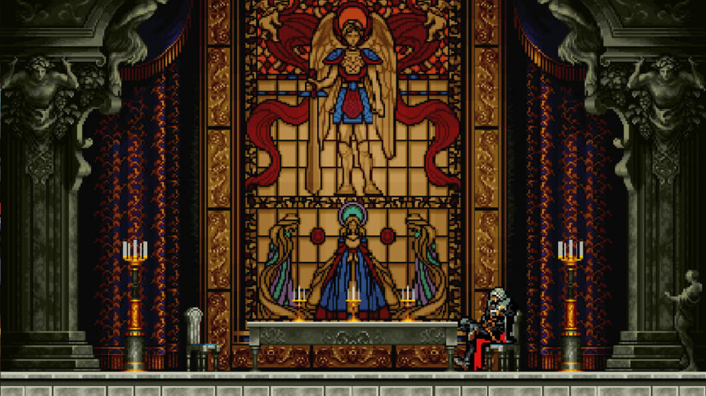

O que é Castlevania SOTN?
"Castlevania: Symphony of the Night" é um dos jogos mais reverenciados da história dos videogames, conhecido por sua atmosfera envolvente, jogabilidade inovadora e trilha sonora memorável. Lançado originalmente em 1997 para o PlayStation, este clássico instantâneo continua a cativar jogadores de todas as idades até hoje.
O que há de novo?
- Inovação na Série: "Symphony of the Night" marcou uma mudança radical na fórmula tradicional da série Castlevania, abandonando o estilo linear em favor de um mapa exploratório estilo Metroidvania.
- Personagem Jogável: Os jogadores assumem o papel de Alucard, filho de Drácula, em sua busca para explorar o Castelo de Drácula e derrotar o próprio pai.
- Trilha Sonora Icônica: Composta por Michiru Yamane, a trilha sonora do jogo é amplamente aclamada e continua a ser uma das mais amadas na história dos videogames.
Desenvolvimento do Jogo
Equipe de Desenvolvimento: Dirigido por Koji Igarashi e produzido por Toru Hagihara, "Symphony of the Night" contou com uma equipe talentosa que trabalhou incansavelmente para criar uma experiência de jogo única.
Influências e Referências: O jogo foi fortemente influenciado por títulos como "Super Metroid" e "The Legend of Zelda", incorporando elementos de exploração não linear e quebra-cabeças desafiadores.
Avaliações e Legado
Recepção Crítica: "Castlevania: Symphony of the Night" recebeu aclamação universal da crítica e do público, elogiado por sua jogabilidade envolvente, gráficos impressionantes e narrativa cativante.
Legado Duradouro: O jogo estabeleceu o padrão para futuros títulos da série Castlevania e influenciou uma geração de desenvolvedores de jogos, inspirando inúmeras obras no gênero Metroidvania.
Cultura Pop: Além de seu impacto na indústria de jogos, "Symphony of the Night" também se tornou um ícone da cultura pop, sendo referenciado em filmes, programas de TV e músicas ao longo dos anos.
Conclusão
Vinte e cinco anos após seu lançamento inicial, "Castlevania: Symphony of the Night" continua a ser celebrado como um marco na história dos videogames, capturando a imaginação dos jogadores com sua atmosfera gótica, jogabilidade desafiadora e personagens inesquecíveis. Seu legado perdura como um testemunho do poder duradouro dos jogos para contar histórias e inspirar gerações de jogadores e criadores de jogos.
veja mais sobre!!
O youtuber GEMAPLYS um grande fan do jogo fez um video incrívil de introdução a essa grande obra, onde ele explora parte por parte do jogo, desde de desnvolvimento a como esse jogo se tornou o que é hoje!
confira
veja no YouTube
Então...
vale a pena jogar esse game? a resposta é... claro que sim!!